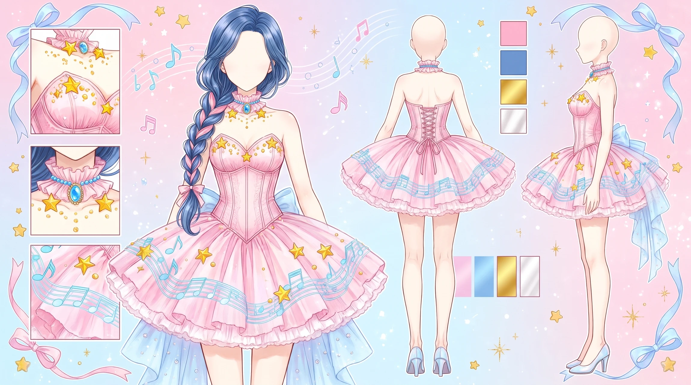
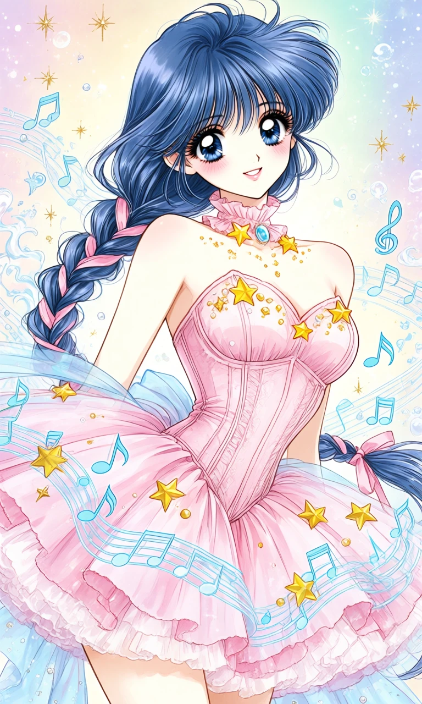
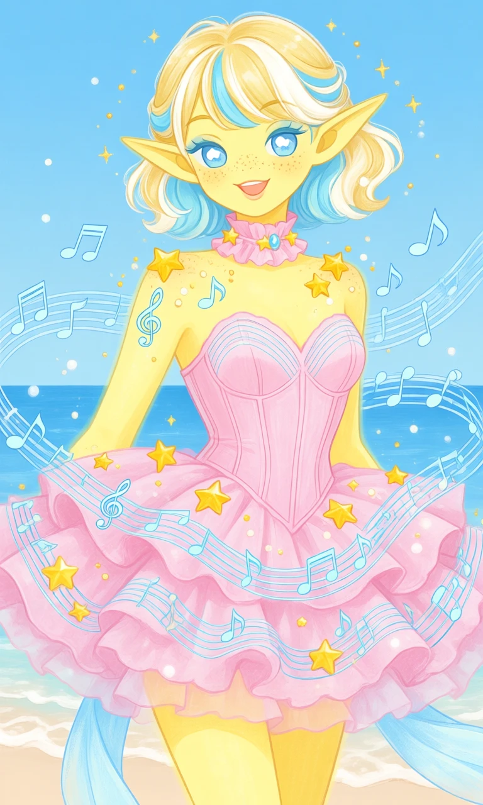

Sugarplum Melody

Outfit Prompt
Strapless, corset-style fitted bodice in soft pastel pink. Structured with vertical seaming that gives a gentle hourglass shape. Light, almost translucent quality with subtle shading for volume. Decorated with floating golden-yellow stars, small pearls/beads, and pale blue musical notes (treble clefs and regular notes) that appear to drift around the chest and shoulders.
Short, layered, ruffled skirt in matching soft pink. Multiple tiers of fabric create a fluffy, petticoat-like volume that flares out from the waist. The hem has a light, airy quality with soft folds and slight transparency. Pale blue ribbon or sash elements trail from the lower skirt area, adding movement and a delicate contrast.
Matching soft pink ruffled choker/collar around the neck, centered with a light blue gem or jewel and two yellow stars on either side. Small golden dots and sparkles surround it. Swirling pale blue musical staff lines (curving like ribbons or waves) wrap around the entire dress, especially the skirt and midsection. Numerous golden-yellow stars of varying sizes float around the outfit. Scattered light blue treble clefs, eighth notes, and other musical symbols. Small pearl-like beads and soft golden accents for extra sparkle.
Outfit Examples



